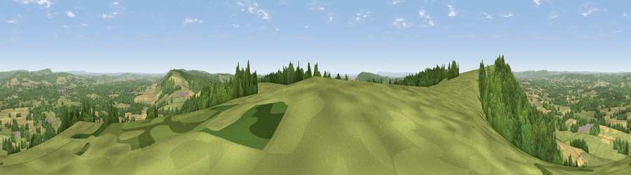

Viewpoint near Cocking
#1414 in England · top 3% of its area beats it · near CockingThe view, rendered

A 360° render of this exact spot computed from the terrain model, tree cover and land cover — summer colours, afternoon light, calibrated against photographs of famous viewpoints. Real trees, hedges and buildings will differ in detail.
The panorama
Grey silhouette: terrain skyline in each direction (720 bearings, Earth curvature and refraction included). Dashed green: skyline with trees (+15 m) and buildings (+8 m) as obstacles. Blue strip: how far the ground is visible on each bearing.
Where the view opens
Wedge length = distance to the farthest visible ground on that bearing (vegetation-aware). Rings at 10, 25 and 50 km.
What fills the view
43% grassland · 37% woodland · 18% cropland · 1% built-up ·
Angular shares of the visible panorama (visual magnitude), not map area. Landscape diversity 0.49 (0–1 Shannon).
Key numbers
More beautiful places nearby
The staircase of upgrades: each row has a higher view potential than everything closer. Driving times are estimates from straight-line distance, calibrated against real road routing — check an actual route before setting out.
| Place | Direction | Drive | Score |
|---|---|---|---|
| Linch Down | WNW · 1 km | ~2 min | 85.2 |
| Beacon Hill | WNW · 5 km | ~11 min | 85.8 |
| Chanctonbury Ring | ESE · 29 km | ~46 min | 87.0 |
| Viewpoint near St. Lawrence | SW · 51 km | ~72 min | 88.2 |
| Viewpoint near Niton | SW · 55 km | ~76 min | 89.2 |
| Viewpoint near West Bexington | WSW · 134 km | ~158 min | 89.5 |
| The Knoll | WSW · 135 km | ~159 min | 91.0 |
50.94813, -0.78463 · source: screening · position refined by local search. Computed location — check access rights before visiting.